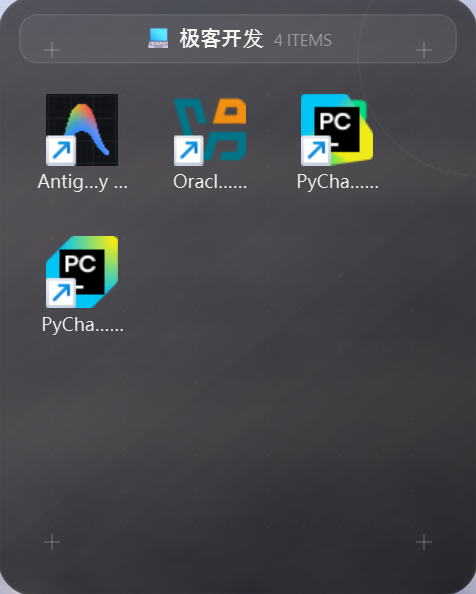

Intelligent Desktop Organization.
An ultra-lightweight, visually stunning virtual desktop organizer. Keep your workspace distraction-free and instantly accessible without moving a single file.

Engineered for Clarity
Everything you need to maintain focus, wrapped in a pure native UI.
AI-Powered Categorization
One-click auto-organization. Files, games, and documents are instantly analyzed and routed into smart fences.
Edge Snapping
Drag a fence to the edge, and it collapses elegantly out of sight.
Liquid Glass UI
Translucent, borderless windows with zero-latency drag-and-drop support.
Zero Dependencies
Compiled into a single, portable executable. No background bloatware.
The V12 Architecture
Performance metrics and core capabilities of the new engine.
< 10ms
Drag & Drop Latency
0
Files Physically Moved
Native
Win32 API Integration
1.2MB
Memory Footprint